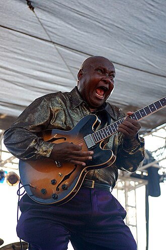

Arthur Adams
Arthur Adams is an American blues guitarist from Medon, Tennessee. Inspired by B.B. King and other 1950s artists, he played gospel music before attending college. He moved to Los Angeles, and during the 1960s and 1970s he released solo albums and worked as a session musician. In 1985 he was tapped to tour on bass guitar with Nina Simone, and he staged a comeback in the 1990s when he released Back on Track, and became a respected Chicago blues player and bandleader in B.B. King's clubs.
Complete Discography & Tracklists (21)
1972 It's Private Tonight 🎵 10 Tracks
1975 Home Brew 🎵 10 Tracks
1977 Midnight Serenade 🎵 9 Tracks
1979 Love My Lady 🎵 10 Tracks
1981 You've Got the Floor - Single 🎵 2 Tracks
1999 Back On Track 🎵 0 Tracks
No tracks registered.
2009 Stomp the Floor 🎵 0 Tracks
No tracks registered.
2012 Feet Back in the Door 🎵 2 Tracks
2017 Look What the Blues Has Done for Me 🎵 25 Tracks
2019 Here to Make You Feel Good 🎵 10 Tracks
2020 Fight for Your Rights 🎵 0 Tracks
No tracks registered.
2022 Rainy Night in Georgia 🎵 0 Tracks
No tracks registered.
2023 Early Sides 🎵 9 Tracks
2023 Kick up Some Dust 🎵 11 Tracks
2023 She's A Superwoman 🎵 2 Tracks
2023 I Got Your Back 🎵 2 Tracks
2023 Last Night 🎵 2 Tracks
2023 Starving for Your Love 🎵 0 Tracks
No tracks registered.